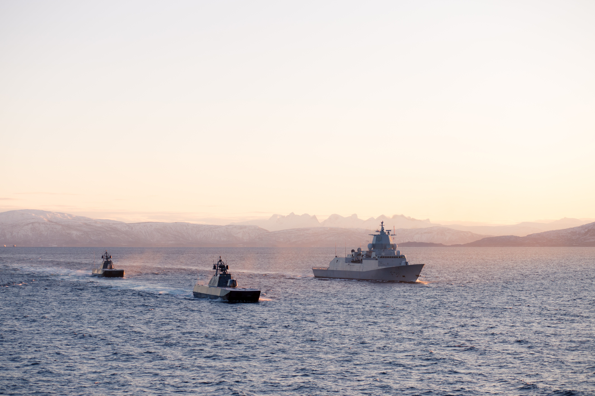

Nye fregatter, flere ubåter og nye standardfartøy
Regjeringens flåteplan vil tilføre Sjøforsvaret minimum fem nye fregatter med helikoptre, inntil ti store og atten mindre standardiserte fartøy, og minimum fem undervannsbåter.

Dette er den største satsingen i ny langtidsplan og vil gi
en betydelig styrking av
Sjøforsvaret.
Vi trenger et sterkt sjøforsvar som kan være tilstede i
våre havområder og forebygge konflikt og ivareta norsk
innflytelse og handlingsrom, sier forsvarsminister
Bjørn Arild Gram
(Sp).
Nye fregatter og maritime helikoptre med anti-ubåtkapasitet
– Den mest kostbare enkelsatsingen i langtidsplanen er kjøp
av minimum fem nye fregatter med anti-ubåt helikoptre.
Dette er en svært viktig investering for å ivareta Norges
betydelige maritime interesser.
Fregattene skal anskaffes, driftes og vedlikeholdes i et strategisk
partnerskap med en nær alliert som har sammenfallende strategiske
interesser i våre nærområder, sier Gram.
Regjeringen legger opp til en rask beslutning om valg av strategisk samarbeidspartner.
Et slikt samarbeid reduserer ulempene ved å stå som eneste bruker av et avansert, høyteknologisk kampsystem. Fregattene må kunne seile og operere kontinuerlig i hele Norges interesseområde. – Å ha kontroll på hva som skjer i våre havområder er Norges kanskje viktigste oppgave i NATO. Det er avgjørende for Forsvarets oppgaveløsning at fregattene kan gjennomføre anti-ubåtoperasjoner.
Som del av anskaffelsen vil regjeringen også anskaffe helikoptre med anti-ubåtkapasitet som kan operere sammen med fregattene, sier forsvarsministeren.
Standardisert fartøysklasse i to størrelser skal løse
Marinens
og Kystvaktens
oppdrag – Forsvaret skal utvikle en standardisert fartøysklasse i to størrelser
– en stor, havgående utgave og en mindre, kystnær utgave.
Forsvaret har i dag en flåte sammensatt av tolv fartøysklasser som gjør drift
og vedlikehold ressurskrevende.
En mer standardisert flåte med like systemer vil bidra til
å effektivisere opplæring og understøttelse, redusere
behovet for reservedeler og bidra til mer effektiv drift av
fartøyene. Fartøyene skal utvikles for å løse både
Kystvaktens og Marinens oppgaver, sier Gram.
De standardiserte fartøyene skal utrustes med modulbaserte våpen og sensorer som kan tilpasses til ulike oppgaver. Fartøyene til Marinen skal blant annet kunne benyttes som plattform for situasjonsforståelse, minelegging, minerydding, maritim styrkebeskyttelse og overvåking av undersjøisk infrastruktur. Kystvaktens standardiserte fartøyer skal tilpasses Kystvaktens viktige oppgaver til støtte for det sivile samfunn, som blant annet inkluderer fiskerioppsyn og søk og redning. – Fartøyene skal designes for å kunne holde følge med den teknologiske utviklingen og gi mulighet for rask utnyttelse og anvendelse av nye teknologiske løsninger som blir tilgjengelig i fartøyenes levetid.
Fartøyene skal være tilrettelagt for utfasing av fossilt drivstoff i fartøyenes levetid. Det er betydelige klimagevinster å hente på utvikling og drift av Sjøforsvarets fartøyer i fremtiden, sier Gram. Fem nye ubåter med opsjon på ytterligere én ubåt – Det er allerede vedtatt å anskaffe fire nye ubåter i samarbeid med Tyskland. Regjeringen anbefaler fem ubåter, med opsjon på ytterligere én ubåt, sier forsvarsministeren.